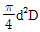
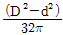
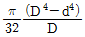
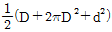
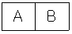
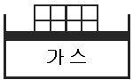
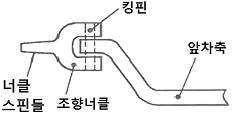

자동차정비기사 (2017-08-26 기출문제)
1과목: 일반기계공학
1. 용접 경계부에 생기는 흠으로 용접전류가 너무 높거나 용접봉의 운봉속도가 빠를 때 일어나는 것은?
- 용입 불량
- 스패터
- 언더컷
- 오버랩
(정답률: 69%)

2. 후크의 법칙이 적용될 때 변형량 식으로 옳은 것은? (단, A=단면적, E=세로탄성계수, ℓ=길이, P=하중이다.)
- Pℓ/AE
- AE/Pℓ
- APℓ/E
- E/ APℓ
(정답률: 64%)
3. 시효경화의 종류 중에서 용체화 처리된 후에 얻어지는 과포화 고용체를 120~160℃ 정도로 가열하여 과포화 성분을 석출시키는 방법은?
- 인공시효
- 자연시효
- 냉각시효
- 열간시효
(정답률: 62%)
4. 일반적으로 마이크로미터로 측정할 수 없는 것은?
- 실린더 내경
- 축의 편심량
- 피스톤의 외경
- 디스크브레이크의 디스크 두께
(정답률: 67%)
5. 원형 단면봉에 비틀림 모멘트(T)가 작용할 때생기는 비틀림각(θ)의 설명으로 옳은 것은?
- 축 길이에 반비례한다.
- 전단탄성계수에 비례한다.
- 비틀림 모멘트에 반비례한다.
- 축 지름의 4제곱에 반비례한다.
(정답률: 50%)
6. 안지름이 18㎝인 관속을 1.5m/sec의 속도로 흐르는 유압유의 유량은 몇 m3/min인가?
- 1.194
- 2.290
- 2.859
- 3.568
(정답률: 49%)
7. 다음 중 기어펌프의 종류가 아닌 것은?
- 로브 펌프
- 터빈 펌프
- 스크루 펌프
- 트로코이드 펌프
(정답률: 64%)
8. 다음 중 숏 피닝(shot-peening)에 대한 설명으로 틀린 것은?
- 냉간 가공법의 일종이다.
- 피로강도가 향상된다.
- 모래를 분사하여 표면가공을 한다.
- 와셔, 핀, 스프링, 부품들에 대해 기계적 성질을 개선하는데 주로 이용된다.
(정답률: 56%)
9. 모듈이 4인 두 외접 스퍼기어의 잇수를 각각 30개, 50개라 할 때 중심거리는 몇 ㎜인가?
- 100
- 120
- 140
- 160
(정답률: 49%)
10. 다음 중 열가소성 수지에 해당하는 것은?
- 요소 수지
- 멜라민 수지
- 실리콘 수지
- 염화비닐 수지
(정답률: 62%)
11. 용접부나 주물검사방법에 적용하는 비파괴 검사법이 아닌 것은?
- 자분 검사
- 조직 검사
- 방사선 검사
- 초음파 검사
(정답률: 66%)
12. 다음 그림과 같이 축과 보스에 모두 키 홈을 가공하는 키의 명칭으로 가장 적합한 것은?
- 안장키
- 납작키
- 반달키
- 묻힘키
(정답률: 60%)
13. 교차하는 두 축의 운동을 전달하기 위하여 원추형으로 만든 기어는?
- 웜 기어
- 베벨 기어
- 스퍼 기어
- 헬리컬 기어
(정답률: 62%)
14. 축의 토크를 전달시키면서 보스를 축 방향으로 이동시킬 필요가 있을 때 사용하는 키는?
- 펑키(flat key)
- 묻힘키(sunk key)
- 페더키(feather key)
- 반달키(woodruff key)
(정답률: 62%)
15. 코일스프링의 설계에서 소선의 지름이 2배로 증가할 때 스프링 상수는 몇 배 증가하는가?
- 2
- 4
- 8
- 16
(정답률: 44%)
16. 실린더 부하가 갑자기 감소하더라도 피스톤이 급진하는 것을 방지하거나 수직 램의 자중 낙하를 막아 주어 밀링, 보링머신 등에 사용 되는 속도 제어 회로는?
- 동조 회로
- 시퀀스 회로
- 미터 아웃 회로
- 어큐뮬레이터 회로
(정답률: 60%)
17. 외경이 D이고, 내경은 d인 파이프의 단면계수(Z)를 구하는 식은?




(정답률: 46%)
18. 기계 재료에서 세로 변형률을 ε, 가로 변형률을 γ라 할 때 포와송의 비(v)는?
- v=ε/γ
- v=εγ
- v=γ/ε
- v=1/εγ
(정답률: 53%)
19. 숫돌입자의 표면이나 기공에 칩(chip)이 채워져 있는 상태를 의미하는 것은?
- 로딩(loading)
- 트루안(truing)
- 드레싱(dressing)
- 글레이징(glazing)
(정답률: 50%)
20. 알루미늄 합금인 두랄루민의 표준성분에 해당하지 않는 원소는?
- Co
- Cu
- Mg
- Mn
(정답률: 66%)
2과목: 기계열역학
21. 그림과 같이 A, B 두 종류의 기체가 한 용기 안에서 박막으로 분리되어 있다. A의 체적은 0.1m3, 질량은 2kg이고, B의 체적은 0.4m3, 밀도는1kg/m3이다. 박막이 파열되고 난 후에 평형에 도달하였을 때 기체 혼합물의 밀도는 약 몇 kg/m3인가?

- 4.8
- 6.0
- 7.2
- 8.4
(정답률: 58%)
22. 오토사이클(Otto cycle) 기관에서 헬륨(비열비=1.66)을 사용하는 경우의 효율(ηHe)과 공기 (비열비=1.4)를 사용하는 경우의 효율(ηair)을 비교하고자 한다. 이때 ηHe/ηair 값은? (단, 오토 사이클의 압축비는 10이다.)
- 0.681
- 0.770
- 1.298
- 1.468
(정답률: 37%)
23. 그림과 같이 다수의 추를 올려놓은 피스톤이 설치된 실린더 안에 가스가 들어 있다. 이때 가스의 최초압력이 300kPa이고, 초기 제적은 0.⑤m3이다. 여기에 열을 가하여 피스톤을 상승시킴과 동시에 피스톤 추를 덜어내어 가스온도를 일정하게 유지하여 실린더 내부의 체적을 증가시킬 경우 이 과정에서 가스가 한 일은 약 몇 kJ인가? (단, 이상기체 모델로 간주하고, 상승 후의 체적은 0.2m3이다.)

- 10.79kJ
- 15.79kJ
- 20.79kJ
- 25.79kJ
(정답률: 53%)
24. 출력 15kW의 디젤기관에서 마찰 손실이 그 출력의 15%일 때, 그 마찰 손실에 의해서 시간당 발생하는 열량은 약 몇 kJ인가?
- 2.25
- 25
- 810
- 8100
(정답률: 48%)
25. 랭킨 사이클로 작동되는 증기동력 발전소에서 20MPa, 45℃의 물이 보일러에 공급되고, 응축기 출구에서의 온도는 20℃, 압력은 2.339kPa이다. 이때 급수펌프에서 수행하는 단위질량당 일은 약 몇 kJ/kg인가? (단, 20℃에서 포화액 비체적은 0.001002m3/kg, 포화증기 비체적은 57.79m3/kg이며, 급수펌프에서는 등엔트로피 과정으로 변화한다고 가정한다.)
- 0.4681
- 20.04
- 27.14
- 1020.6
(정답률: 41%)
26. 이론적으로 카로노 열기관의 효율(η)을 구하는 식으로 옳은 것은? (단, 고열원의 절대온도는 TH, 저열원의 절대온도는 TL이다.)
- η= 1－(TH/TL)
- η= 1＋(TL/TH)
- η= 1－(TL/TH)
- η= 1＋(TH/TL)
(정답률: 50%)
27. 가스터빈으로 구동되는 동력 발전소의 출력이 10MW이고 열효율이 25%라고 한다. 연료의 발열량이 45000kJ/kg이라면 시간당 공급해야 할 연료량은 약 몇 kg/h인가?
- 3200
- 6400
- 8320
- 12800
(정답률: 50%)
28. 3kg의 공기가 들어있는 실린더가 있다. 이공기가 200kPa, 10°C인 상태에서 600kPa이 될 때까지 압축할 때 공기가 한 일은 약 몇 kJ인가? (단, 이 과정은 폴리트로프 변화로서 폴리트로프 지수는 1.3이다. 또한 공기의 기체상수는 0.287kJ/(kg·K)이다.)
- -285
- -235
- 13
- 125
(정답률: 40%)
29. 다음 중 강도성 상태량(intensive property)에 속하는 것은?
- 온도
- 체적
- 질량
- 내부에너지
(정답률: 56%)
30. 어떤 냉장고의 소비전력이 2kW이고, 이 냉장고의 응축기에서 방열되는 열량이 5kW 라면, 냉장고의 성적계수는 얼마인가? (단, 이론적인 증기압축 냉동사이클로 운전된다고 가정한다.)
- 0.4
- 1.0
- 1.5
- 2.5
(정답률: 51%)
31. 체적이 0.1m3인 용기 안에 압력 1MPa, 온도 250℃의 공기가 들어 있다. 정적과정을 거쳐 압력이 0.35MPa로 될 때 이 용기에서 일어난 열전달 과정으로 옳은 것은? (단, 공기의 기체상수는 0.287kJ/(kg·K), 정압비열은 1.0035kJ/(kg·K), 정적비열은 0.7165(kJ/(kg·K)이다.)
- 약 162kJ의 열이 용기에서 나간다.
- 약 162kJ의 열이 용기로 들어간다.
- 약 227kJ의 열이 용기에서 나간다.
- 약 227kJ의 열이 용기로 들어간다.
(정답률: 48%)
32. 다음 중 냉매의 구비조건으로 틀린 것은?
- 증발 압력이 대기압보다 낮을 것
- 응축 압력이 높지 않을 것
- 비열비가 작을 것
- 증발열이 클 것
(정답률: 51%)
33. 어느 발명가가 바닷물로부터 매시간 1800kJ의 열량을 공급받아 0.5kW 출력의 열기관을 만들었다고 주장한다면, 이 사실은 열역학 제 몇 법칙에 위반 되겠는가?
- 제 0법칙
- 제 1법칙
- 제 2법칙
- 제 3법칙
(정답률: 50%)
34. 1kg의 이상기체가 압력 100kPa, 온도 20℃의 상태에서 압력 200kPa, 온도 100℃의 상태로 변화하였다면 체적은 어떻게 되는가? (단, 변화 전 체적을 V라고 한다.)
- 0.65V
- 1.57V
- 3.64V
- 4.57V
(정답률: 43%)
35. 1kg의 기체로 구성되는 밀폐계가 50kJ의 열을 받아 15kJ의 일을 했을 때 내부에너지 변화량은 얼마인가? (단, 운동에너지의 변화량은 무시한다.)
- 65kJ
- 35kJ
- 26kJ
- 15kJ
(정답률: 55%)
36. 다음 중 이론적인 카르노 사이클 과정(순서) 을 옳게 나타낸 것은? (단, 모든 사이클은 가역 사이클이다.)
- 단열압축→정적가열→단열팽창→정적방열
- 단열압축→단열팽창→정적가열→정적방열
- 등온팽창→등온압축→단열팽창→단열압축
- 등온팽창→단열팽창→등온압축→단열압축
(정답률: 47%)
37. 체적이 0.5m3, 온도가 80°C인 밀폐 압력용기 속에 이상기체가 들어 있다. 이 기체의 분자량이 24이고, 질량이 10kg이라면 용기속의 압력은 약 몇 kPa인가?
- 1845.4
- 2446.9
- 3169.2
- 3885.7
(정답률: 54%)
38. 물 2L를 1kW의 전열기를 사용하여 20°C로부터 100°C까지 가열하는데 소용되는 시간은 약 몇 분(min)인가? (단, 전열기 열량의 50%가 물을 가열하는데 유효하게 사용되고, 물은 증발하지 않는 것으로 가정한다. 물의 비열은 4.18kJ/(kg·K)이다.)
- 22.3
- 27.6
- 35.4
- 44.6
(정답률: 17%)
39. 초기에 온도 T, 압력 P 상태의 기체(질량m)가 들어있는 견고한 용기에 같은 기체를 추가로 주입하여 최종적으로 질량 3m, 온도 2T 상태가 되었다. 이때 최종 상태에서의 압력은? (단, 기체는 이상기체이고, 온도는 절대온도를 나타낸다.)
- 6P
- 3P
- 2P
- 3P/2
(정답률: 57%)
40. 어떤 물질 1kg이 20°C에서 30°C로 되기 위해 필요한 열량은 약 몇 kJ인가? (단, 비열(C, kJ/(kg·K))은 온도에 대한 함수로서 C=3.594＋0.0372T이며, 여기서 온도(T)의 단위는 K이다.)
- 4
- 24
- 45
- 147
(정답률: 42%)
3과목: 자동차기관
41. 가솔린 비중이 0.75, 저위발열량이 11000kcal/kg, 경유 비중이 0.85, 저위발열량이 10000kcal/kg일 때 가솔린 1ℓ와 같은 발열량을 얻기 위해 경유는 약 몇 ℓ가 필요한가?
- 0.85
- 0.87
- 0.95
- 0.97
(정답률: 40%)
42. 평균유효압력에 관한 설명으로 틀린 것은?
- 평균유효압력=1사이클 일 ÷행적체적
- 도시평균유효압력=이론평균유효압력×선도계수
- 제동평균유효압력=도시평균유효압력×체적효율
- 마찰평균유효압력=도시평균유효압력-제동평균 유효압력
(정답률: 58%)
43. 전자제어 가솔린엔진에서 인젝터 점검 항목이 아닌 것은?
- 작동음 점검
- 분사량 점검
- 분사속도 점검
- 코일저항 점검
(정답률: 52%)
44. 복합사이클 엔진의 설명으로 옳은 것은?
- 가솔린엔진과 가스엔진의 기본 사이클이다.
- 연소가 정적, 정압하에서 연속적으로 이루어진다.
- 공기표준 복합사이클은 2대의 단열과정과 2개의 정압과정으로 이루어진다.
- 연소가 일정한 압력하에서 진행되는 공기분사식 디젤엔진의 기본 사이클이다.
(정답률: 52%)
45. 커먼레일 디젤엔진에서 파일럿분사에 대한 설명으로 옳은 것은?
- 엔진을 냉각시킨다.
- DPF를 활성화 시킨다.
- 착화지연시간을 길게 한다.
- 엔진의 진동을 저감시킨다.
(정답률: 56%)
46. 750rpm으로 회전하는 가솔린엔진에서 점화 후 최대 폭발압력 시까지 소요시간이 3.0ms이다. 이 시간 동안 크랭크축의 회전 각도는 ? (단, 착화지연시간은 무시한다.)
- 10°
- 11.5°
- 12°
- 13.5°
(정답률: 30%)
47. 엔진으로 흡입되는 공기와 연료의 혼합비와 유해배출가스 발생량의 관계에 대한 설명으로 옳은 것은?
- 이론혼합비이면 NOx, CO, HC가 증가한다.
- 이론혼합비보다 농후하면 CO, HC는 증가하고, NOx는 감소한다.
- 이론혼합비보다 희박하면 CO, HC는 증가하고, NOx는 감소한다.
- 이론혼합비보다 현저하게 희박하면 HC, CO는 증가하고, NOx는 감소한다.
(정답률: 44%)
48. 유해배출가스 저감장치와 처리 가능한 배출가스 성분과의 연결이 틀린 것은?
- EGR 장치- NOx 저감
- 증발가스 제어장치- HC 저감
- 블로바이가스 제어장치- NOx 저감
- 삼원 촉매 장치- CO, HC, NOx 저감
(정답률: 74%)
49. 전자제어 가솔린 연료분사장치의 피드백 제어에 관한 사항으로 틀린 것은?
- 냉각수 온도가 현저히 낮으면 피드백 제어를 하지 않는다.
- 피드백 제어의 입력 요소는 산소센서이고 출력요소는 인젝터이다.
- 지르코니아 산소센서의 기전력이 커지면 인젝터 분사기간을 짧게 한다.
- 배기가스 중의 산소 농도가 증가하면 지르코니아 산소센서의 기전력은 커진다.
(정답률: 50%)
50. LPG 엔진에서 베이퍼라이저에 냉각수 통로를 설치한 이유로 옳은 것은?
- LPG의 높은 압력을 낮추기 위하여
- LPG가 기화될 때 온도가 뜨거우므로 냉각시키기 위하여
- LPG가 기화될 때 온도가 낮아져 동결되는 것을 막기 위하여
- LPG가 기화될 때 위험하므로 냉각수로 기화 되는 것을 막기 위하여
(정답률: 64%)
51. 제동마력이 150PS, 엔진회전수가 2000rpm일 때 엔진의 회전력은 약 몇 kgf·m인가?
- 5.6
- 13.3
- 53.7
- 95.5
(정답률: 38%)
52. 전자제어 가솔린 엔진에서 가속 및 감속 시에 연료량 보정을 하지 않는다면 공연비는 어떻게 되는가?
- 가속 및 감속 시 모두 희박해진다.
- 가속 및 감속 시 모두 농후해진다.
- 가속 시는 희박해지고, 감속 시는 농후해진다.
- 가속 시는 농후해지고, 감속 시는 희박해진다.
(정답률: 60%)
53. 자동차 연료 중 LPG에 대한 설명으로 틀린 것은?
- 공기보다 무겁다.
- 저장을 기체상태로 한다.
- 온도상승에 의해 압력상승이 일어난다.
- 연료 충진은 탱크 용량의 약 85% 정도로 한다.
(정답률: 65%)
54. 실제 흡입된 실린더 내의 공기 질량을 이론적으로 흡입 가능한 공기의 질량으로 나눈 값은 무엇인가?
- 기계효율
- 체적효율
- 정미효율
- 정격효율
(정답률: 66%)
55. 엔진의 밸브장치에서 소음이 발생하는 원인으로 틀린 것은?
- 유압태핏 불량
- 캠축손상
- 윤활장치 결함
- 연료장치 결함
(정답률: 61%)
56. 과급장치의 특징으로 틀린 것은?
- 엔진 출력이 향상된다.
- 연료 소비율이 향상된다.
- 착화지연기간을 길게 한다.
- 잔류 배출가스를 완전히 배출할 수 있다.
(정답률: 66%)
57. 엔진의 냉각장치에 설치되어 있는 수온조절기의 역할로 틀린 것은?
- 과열 및 과냉을 방지한다.
- 엔진의 온도를 일정하게 한다.
- 워터 펌프의 성능을 향상시킨다.
- 라디에이터로 흐르는 물 통로를 개폐한다.
(정답률: 72%)
58. 엔진이 냉각 되었을 때 공회전속도 조절장치의 흡입공기량 조절방법으로 옳은 것은?
- EGR밸브를 더 연다.
- 스텝모터의 스텝수를 감소시킨다.
- ISC밸브의 바이패스 통로를 더 연다.
- 스로틀 밸브를 닫아 진공도를 증가시킨다.
(정답률: 60%)
59. 인젝터 제어에 관한 설명으로 틀린 것은?
- 혼합비가 농후하면 분사시간을 길게 한다.
- 급가속 시 순간적으로 분사시간이 길어진다.
- 배터리 전압이 낮으면 무효분사시간이 길어진다.
- 급감속 시 순간적으로 분사가 정지되기도 한다.
(정답률: 57%)
60. 자동차의 구동력을 크게 하기 위한 방법으로 틀린 것은?
- 엔진의 출력을 높인다.
- 동력전달 효율을 높인다.
- 최종 감속비를 크게 한다.
- 구동바퀴의 반경을 크게 한다.
(정답률: 50%)
4과목: 자동차새시
61. ABS 시스템의 구성부품에 해당하지 않는 것은?
- 차고 센서
- ABS 경고등
- 휠스피드 센서
- 하이드로릭 유닛
(정답률: 71%)
62. 차체 자세제어장치(ESP)의 제어 모듈(ESP ECU)로 입력되는 신호가 아닌 것은?
- 임팩트 센서
- 휠 속도 센서
- 가속 페달 위치센서
- 마스터 실린더 압력센서
(정답률: 62%)
63. 공기식 제동장치 기능을 설명한 것으로 틀린 것은?
- 릴레이 밸브는 주차된 차량의 제동 기능을 해제시킨다.
- 에어 드라이어는 공기 압축 시 포함된 수분을 제거하여 브레이크 장치를 보호한다.
- 퀵 릴리스 밸브는 브레이크를 해제 시켰을 때 챔버에 축전된 공기를 신속히 배출시킨다.
- 브레이크 밸브는 페달에 의해 개폐되며, 폐달을 밟는 정도에 따라 공기탱크 내의 압축공기를 도입하여 제동력을 조절한다.
(정답률: 69%)
64. 전자제어 자동변속기 고장점검 시 가장 먼저 점검해야 할 사항은?
- 오일 압력을 점검한다.
- 밸브 바디를 점검한다.
- 자동변속기를 분해하여 점검한다.
- 오일의 양과 색, 냄새 등을 점검한다.
(정답률: 76%)
65. 수동변속기에서 주행 중 기어가 빠지는 현상이 발생하는 원인으로 틀린 것은?
- 클러치 디스크의 과대 마모
- 시프트 레일 내부의 과대 마모
- 싱크로나이저 키의 과대 마모
- 싱크로나이저 허브 및 슬리브 불량
(정답률: 54%)
66. 유압식 브레이크에서 마스터 실린더의 직경이 4㎝이고, 푸시로드에 작용하는 힘이 100kgf일 때 발생하는 유압은 약 몇kgf/cm2인가?
- 4.96
- 7.96
- 9.96
- 11.96
(정답률: 52%)
67. 무단변속기 전자제어시스템의 유압제어에 해당되지 않는 것은?
- 제동 제어
- 변속비 제어
- 라인 압력 제어
- 클러치 압력 제어
(정답률: 54%)
68. 전자제어 조향장치의 특징으로 옳은 것은?
- 공전과 저속에서 조향핸들 조작력이 무겁다.
- 고속 주행 시에는 주행 안정성을 위해 조향핸들 조작력을 가볍게 한다.
- 유량제어 솔레노이드밸브를 통해서 조향핸들 조작력을 제어한다.
- 중속에서는 차량 속도에 감응하여 조향핸들 조작력을 변화시키지 못한다.
(정답률: 67%)
69. 스노우 타이어의 특성으로 틀린 것은?
- 견인력과 방향성이 향상된다.
- 눈길에서 제동성능이 향상된다.
- 타이어와 노면 간의 접지력을 크게 한다.
- 차륜에 걸리는 하중을 작게 하여 구동력을 낮춘다.
(정답률: 78%)
70. ABS 제어채널 방식 중 주로 후륜구동 차량에 적합하며, 후륜 측의 유압을 동시에 제어하는 것은?
- 4센서 1채널
- 2센서 2채널
- 4센서 3채널
- 3센서 4채널
(정답률: 65%)
71. 차량중량이 1000kgf인 자동차가 80km/h에서 총 제동력 820kgf로 급제동하였을 때, 정지거리는 약 몇 m인가? (단, 공주시간 0.1초, 회전부분 상당중량은 차량 중량의 5%이다.)
- 15.67
- 24.33
- 34.49
- 44.74
(정답률: 27%)
72. 그림과 같은 앞차축과 조향너클의 설치 방식은?

- 엘리옷형(elliot type)
- 마몬 형(marmon type)
- 르모앙형(lemonine type)
- 역엘리옷형(reversed elliot type)
(정답률: 54%)
73. 수동변속기 차량에서 클러치가 미끄러지는 원인으로 틀린 것은?
- 클러치 오일량이 많다.
- 클러치 디스크가 마모되었다.
- 클러치 스프링의 장력이 약화되었다.
- 클러치 페달의 자유간극이 너무 작다.
(정답률: 38%)
74. 조향 기어비에 대한 설명 중 옳은 것은?
- 조향 기어비는 1보다 작아야만 한다.
- 조향 기어비를 크게 하면 조향핸들의 조작이 신속하게 된다.
- 조향 기어비를 크게 하면 조향핸들의 조작에 큰 회전력이 필요하다.
- 조향핸들의 회전 각도를 조향기어장치 출력축(피트먼 암)의 선회각도로 나눈 값을 말한다.
(정답률: 63%)
75. 클러치의 구비 조건에 대한 설명으로 틀린 것은?
- 회전관성이 커야한다.
- 회전 부분의 평형이 좋아야 한다.
- 동력의 단속 작용이 확실해야 한다.
- 냉각이 잘 되어 과열이 방지 되어야 한다.
(정답률: 70%)
76. 직렬형 하이브리드 자동차의 특징에 대한 설명으로 틀린 것은?
- 병렬형보다 에너지 효율이 비교적 높다.
- 엔진, 발전기, 전동기가 직렬로 연결된다.
- 모터의 구동력만으로 차량을 주행시키는 방식이다.
- 엔진을 가동하여 얻은 전기를 배터리에 저장하는 방식이다.
(정답률: 59%)
77. 공기 스프링 현가장치의 특징에 대한 설명으로 틀린 것은?
- 압축 공기의 탄성을 이용한 형식이다.
- 적재량이 변화하여도 차체의 높이를 일정하게 유지할 수 있다.
- 하중의 증감에 관계없이 스프링 고유 진동수를 수시로 변화시킨다.
- 압축 공기를 공급하거나 배출시켜 차체의 높이를 일정하게 유지할 수 있다.
(정답률: 67%)
78. 브레이크를 강하게 밟았을 때 뒷바퀴가 상·하로 흔들리는 현상은?
- 스퀼치(squelch)
- 브레이크 홉(brake hop)
- 브레이크 저더(brake judder)
- 브레이크 스퀵(brake squeak)
(정답률: 62%)
79. 자동변속기의 제어모듈(TCU)에 입력되는 신호가 아닌 것은?
- 입·출력 속도 센서
- 인히비터 스위치
- 연료 온도 센서
- 브레이크 스위치
(정답률: 47%)
80. 추친축의 굽힘 진동인 훨링(whirling)을 일으키는 주요 원인으로 옳은 것은?
- 추진축의 강도 저하
- 슬립이음 유연성 불량
- 변속기 출력축과 추친축의 접촉 불량
- 추친축의 기하학적 중심과 질량적 중심의 불일치
(정답률: 70%)
5과목: 자동차전기
81. 자동차용 납산배터리의 구성에 대한 설명 중 틀린 것은?
- 양극판과 음극판으로 구성된다.
- 양극판의 단락을 방지하기 위한 격리판이 있다.
- 직경이 큰 단자기둥은(-)이고, 작은 단자 기둥은(＋)이다.
- 전해액으로는 황산과 증류수를 혼합하여 희석시킨 묽은황산을 사용한다.
(정답률: 74%)
82. 제너다이오드에 대한 설명으로 틀린 것은?
- 정전압 다이오드라고도 한다.
- AC발전기의 전압조정기에 사용하기도 한다.
- 특정 전압 이상에서는 역방향으로 전류가 흐른다.
- 순방향으로 가한 일정 전압을 제너전압이라고 한다.
(정답률: 60%)
83. 그로울러 시험기의 주요 시험항목이 아닌 것은?
- 전기자의 전압시험
- 전기자의 단선시험
- 전기자의 접지시험
- 전기자의 단락시험
(정답률: 72%)
84. 전장회로도에서 배선의 치수 및 색깔 코드가 0.85R/W일 경우 W가 뜻하는 것은?
- 단면적
- 줄무늬 색
- 바탕색
- 배선의 굵기
(정답률: 62%)
85. 하이브리드 자동차에 사용되는 배터리 중에서 에너지 밀도가 가장 높은 것은?
- Li-Ion(리튬-이온) 배터리
- AGM(흡수성 유리섬유) 배터리
- Li-Polymer(리튬-폴리머) 배터리
- Ni-MH(니켈-수산화금속) 배터리
(정답률: 65%)
86. 에어백 모듈(ACM)로부터 신호를 받아 충전가스를 분출시키는 부품은?
- 플레어
- 인플레이터
- 프리텐셔너
- 쇼크 솔레노이드
(정답률: 69%)
87. 20000cd를 갖는 광원으로부터 100m 떨어진 지점에서 측정한 조도는?
- 0.2 lx
- 2 lx
- 20 lx
- 200 lx
(정답률: 66%)
88. 차량에 사용하는 PIN(product identification number) 코드에 대한 설명으로 가장 거리가 먼 것은?
- 차량의 키를 등록할 때 필요하다.
- 배터리를 교환할 때 입력해야 한다.
- 차량의 ECU를 초기화할 때 필요하다.
- 일반적으로 PIN코드는 6자리로 구성되어 있다.
(정답률: 65%)
89. 전자력에 대한 설명으로 틀린 것은?
- 자계의 세기에 비례한다.
- 자력에 의해 도체가 움직이는 힘이다.
- 도체의 길이, 전류의 크기에 비례한다.
- 자계방향과 전류의 방향이 평행일 때 가장 크다.
(정답률: 60%)
90. 교류발전기에서 B단자(출력단자)를 연결하지 않은 상태로 엔진을 장시간 운행하였을 때 발생되는 현상은?
- 과충전이 일어난다.
- 로터 코일이 단선된다.
- 충전 경고등이 점등된다.
- 충전이 안 되지만 이상은 없다.
(정답률: 64%)
91. 배터리 분극전압에 대한 설명으로 옳은 것은?
- 단자전압과 실제 무부하전압과의 차이
- 배터리 전극에서 실제로 측정되는 전압
- 셀당 정격전압과 직렬로 결선된 셀 수의 곱
- 전류 소비가 없는 상태에서 극판 표면의 무부하전압이 회복된 후의 전압
(정답률: 36%)
92. 에어컨 작동 시 압력을 측정한 결과, 고압은 정상보다 낮고 저압은 높게 측정 되었다면 결함사항으로 옳은 것은?
- 압축기의 압축 불량이 많다.
- 냉매 충전량이 너무 많다.
- 에어컨 시스템에 공기가 혼입되었다.
- 에어컨 시스템에 수분이 혼입되었다.
(정답률: 65%)
93. 자동차 도난 경보 시스템의 경보 작동 조건이 아닌 것은? (단, 경계진입 상태이다.)
- 후드가 승인되지 않은 상태에서 열릴 때
- 도어가 승인되지 않은 상태에서 열릴 때
- 트렁크가 승인되지 않은 상태에서 열릴 때
- 윈도우가 승인되지 않은 상태에서 열릴 때
(정답률: 57%)
94. 전조등시험기의 정밀도에 대한 검사기준에서 광도지시의 설정값에 대한 허용오차 범위는?
- ±10% 이내
- ±15% 이내
- ±17% 이내
- ±20% 이내
(정답률: 56%)
95. 전기 자동차용 전동기에 요구되는 조건으로 틀린 것은?
- 구동 토크가 커야 한다.
- 충전시간이 길어야 한다.
- 속도제어가 용이해야 한다.
- 취급 및 보수가 간편해야 한다.
(정답률: 76%)
96. 자동차 냉방장치에서 리시버 드라이어(건조 기)의 기능이 아닌 것은?
- 액체냉매를 기체상태로 건조시킨다.
- 냉매에 함유된 수분 및 이물질을 제거한다.
- 응축기로부터 배출된 냉매에 포함된 기포를 분리한다.
- 에어컨 사이클의 부하 변동에 대응할 수 있도록 적절한 냉매를 저장한다.
(정답률: 44%)
97. 전압 110V, 전류 65A인 발전기의 출력은 약 몇 PS인가? (단 발전기의 효율은 85%이다.)
- 0.25
- 0.8
- 7
- 8.25
(정답률: 32%)
98. 하이브리드 자동차의 영구자석 동기 전동기(Permanent Magnet Synchronous Motor)에 대한 설명 중 틀린 것은?
- 비동기 전동기와 비교해서 효율이 높다.
- 에너지 밀도가 높은 영구자석을 사용한다.
- 대용량의 브러시와 정류자를 사용하여 한다.
- 전자 스위칭 회로를 이용하여 특성에 맞게 전동기를 제어한다.
(정답률: 49%)
99. 기동전동기의 회전이 느려지는 원인으로 틀린 것은?
- 정류자의 상태가 불량할 때
- 배터리 방전으로 전압이 낮을 때
- 전기자 코일의 접지 상태가 불량할 때
- 마그네틱 스위치의 플런저 리턴 스프링의 장력이 약할 때
(정답률: 46%)
100. 4기통 가솔린엔진에서 동시(그룹)점화 방식에 대한 설명으로 틀린 것은?
- 배기행정을 하는 실린더에서는 무효방전이 된다.
- 파워 트랜지스터의 스위칭작용으로 점화코일에 흐르는 전류를 단속한다.
- 압축행정을 하는 실린더와 배기행정을 하는 실린더가 동시 점화된다.
- 두 실린더에 병렬로 연결되어 동시 점화되므로 점화에 인가되는 전압의 크기가 같다.
(정답률: 54%)